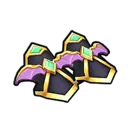

Avambraços de Asa Noturna
Braçadeiras · Tier 11 · Nível 34
Não existe acessório melhor para passar por páginas e mais páginas de cartas de fãs. Os vampiros recebem várias desde que aquele livro foi publicado.
Atributos
Defesa
245
Vida
15
Economia
Valor
1.700.000
Tempo de fabricação
13h 30min
XP do comerciante
110.000
Trabalhadores: Alfaiate 27, Mestre 23, Ferreiro 20
Receita


Marcos do projeto
6
Tempo de fabricação -20%
16
-71 Couro
28
Valor +25%
45
-21 Tecido
70
Chance de qualidade +1